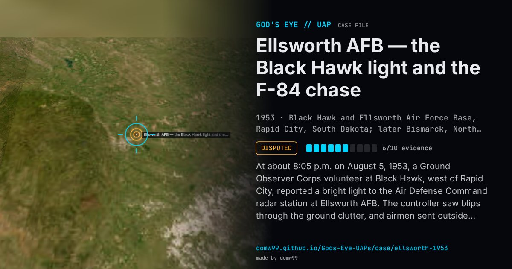

Ellsworth AFB — the Black Hawk light and the F-84 chase

At about 8:05 p.m. on August 5, 1953, a Ground Observer Corps volunteer at Black Hawk, west of Rapid City, reported a bright light to the Air Defense Command radar station at Ellsworth AFB. The controller saw blips through the ground clutter, and airmen sent outside watched a light cross from north to south. F-84 fighters on patrol were vectored onto the returns. One pilot saw only a brief, very bright light; the second climbed from 15,000 to 26,000 ft after a white light that turned green and was “considerably brighter than a star”, said it “definitely moved in relation to the stars”, and chased it for about 80 miles to the north while the controller tracked both on radar. His radar gunsight’s warning light came on, but the gun camera produced nothing usable. After midnight the Bismarck filter center, told to look for flying saucers, reported more lights. Capt. Edward Ruppelt flew to Rapid City to investigate himself; Blue Book filed the case as unsolved, and the Condon study later explained it as stars, a meteor and radar artefacts.
Explanation
Project Blue Book carried the case as unsolved. The Condon study (1968) attributed the Rapid City and Bismarck sightings to stars seen through a temperature inversion, at least one meteor, anomalous-propagation and ghost echoes on the ground radar, and a faulty radar gunsight in the F-84; the Blue Book investigator had suggested Capella low in the north, a balloon or a meteor.
What was seen
Shape: A bright light, white turning green; red-to-white lights later
Witnesses: A Ground Observer Corps volunteer, radar controllers, airmen and two F-84 pilots
Duration: About 20:05 to 02:50 MST, on and off
Sources
- Project Blue Book file, Rapid City and Black Hawk, August 1953 (Internet Archive)
- Blue Book Status Report 12 on the case (transcribed)
- The Condon report’s summary of the case (transcribed)
Browse
- United States
- 1950s
- Disputed
- Radar-visual cases
- Official government documents
- Military witnesses
- Pilot and aircrew witnesses
- Radar tracking
- Lights and fireballs